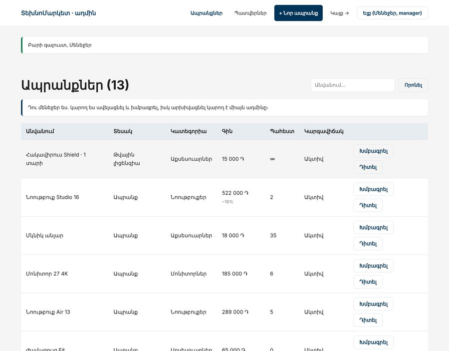
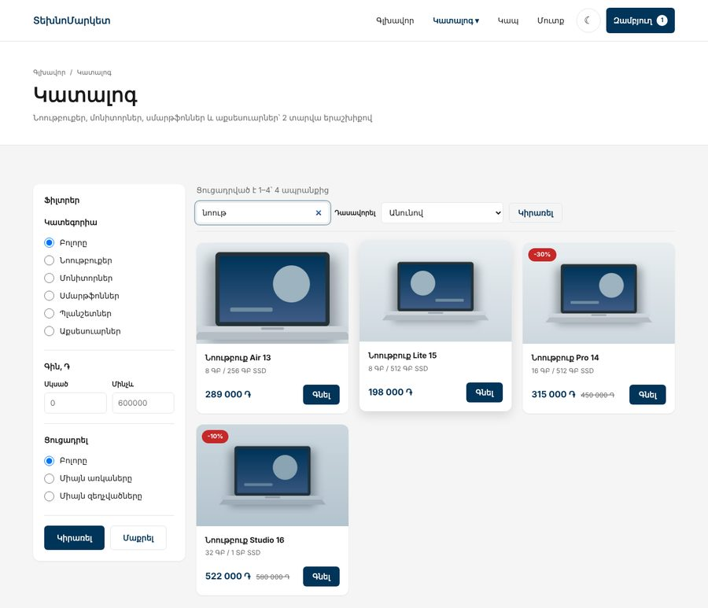
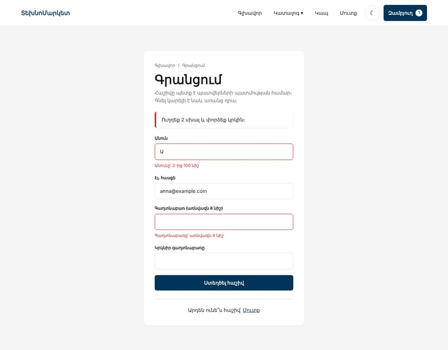

Բլոկ 3 · նախագիծ · 3 առաջադրանք
ՏեխնոՄարկետը՝ սերվերում
Բլոկ 1-ում ՏեխնոՄարկետը ստացավ տեսք, Բլոկ 2-ում՝ վարքագիծ բրաուզերում։ Բլոկ 3-ում այն դառնում է իսկական խանութ․ ապրանքները բազայում են, պատվերները պահվում են, ադմինը կառավարում է կատալոգը, իսկ գնորդը մուտք է գործում իր հաշիվ։ Նախագիծը կառուցում ես երեք անգամ՝ մաքուր PHP-ով, սեփական ֆրեյմվորքով և Laravel-ով։
00Ինչպես աշխատել այս թղթապանակի հետ
Նախ կատարիր առաջադրանքը և անցիր ընդունման ստուգաթերթով, հետո բաց արա օրինակը։ PHP-ի օրինակները չեն բացվում կրկնակի սեղմումով․ դրանց պետք է սերվեր և բազա։ Ամեն օրինակի README.md-ում՝ գործարկման հրամանները։
01Երեք քայլ
| Երբ | Առաջադրանք | Օրինակ | Ինչ է ավելանում |
|---|---|---|---|
| Դաս 01–11 | 1 · Խանութը սերվերում | example-1-php-mysql | Շաբլոններ, ֆորմաներ, սեսիա, զամբյուղ, MySQL, կատալոգ ֆիլտրերով, պատվեր տրանզակցիայով, ադմին CRUD |
| Դաս 12–17 | 2 · Սեփական ֆրեյմվորք | example-2-mvc | Դասեր, Composer, Router, կոնտրոլերներ, մուտք և դերեր, CSRF, JSON API, fetch-ով «Գնել» և որոնում |
| Դաս 18–24 | 3 · Laravel | example-3-laravel | Միգրացիաներ, Eloquent, Blade, Form Request-ներ, Fortify, Gate-եր, հրապարակում, պաշտպանություն |
Ամեն առաջադրանք նույն ՏեխնոՄարկետն է՝ նույն էջերով և նույն CSS-ով։ Փոխվում է միայն այն, թե ինչպես է կառուցված կոդը։ Դա միտումնավոր է․ երբ Laravel-ում գրում ես Route::resource կամ $request->validated(), դու արդեն գիտես, թե ինչ է այն անում ներսում, որովհետև նույնը գրել ես ձեռքով։
02Ինչպես է այն կապված դասերի հետ
| Դաս | Թեմա | Նախագծում |
|---|---|---|
| 01 | Սերվեր, Laragon | Բլոկ 1-ի էջերը՝ .php, դինամիկ տարեթիվ |
| 02–03 | Շարահյուսություն, զանգվածներ, ֆունկցիաներ | Քարտերը՝ foreach-ով, functions.php |
| 04 | AI | context.txt ՏեխնոՄարկետի համար, կոդի վերանայում |
| 05 | Շաբլոններ, XSS | e(), render(), layout |
| 06–07 | Ֆորմաներ, սեսիաներ, ֆայլեր | Կապ, զամբյուղ, flash, թեմա, նկարի վերբեռնում |
| 08–11 | SQL, PDO, CRUD | Կատալոգը բազայից, պատվեր, ադմին |
| 12–14 | OOP, Composer | Մոդելներ, Repository-ներ, .env |
| 15–17 | MVC, մուտք, API | Router, դերեր, CSRF, JSON API, fetch |
| 18–21 | Laravel | Նույն խանութը ֆրեյմվորքով |
| 22–24 | Պորտֆոլիո, CV, հարցազրույց | Հրապարակում, README, պաշտպանություն |
03Ինչ է ուղղվում Բլոկ 2-ից
| Բլոկ 2-ում | Բլոկ 3-ում | Որտեղ |
|---|---|---|
Ապրանքները՝ products.json-ում, ադմինը չի կարող փոխել դրանք | MySQL և ադմին վահանակ | Առաջադրանք 1, Դաս 8–11 |
Զամբյուղը՝ localStorage-ում, ամեն բրաուզերում՝ իրենը | Սեսիա սերվերում, գինը՝ միշտ բազայից | Առաջադրանք 1, Դաս 7 |
| Ֆորմայի ստուգումը՝ միայն JS-ում, DevTools-ով շրջանցվում է | Վալիդացիա սերվերում, JS-ը միայն օգնում է | Առաջադրանք 1, Դաս 6 |
| Պատվերը ոչ մի տեղ չի պահվում | orders + order_items տրանզակցիայով | Առաջադրանք 1, Դաս 11 |
| Մուտքը և գրանցումը՝ միայն ֆորմայի տեսք | Իսկական հաշիվներ, դերեր, CSRF | Առաջադրանք 2, Դաս 16 |
| Առանց JS-ի էջը դատարկ էր | HTML-ը՝ սերվերից, JS-ը՝ progressive enhancement | Առաջադրանք 2, Դաս 17 |
04Վերջնական արդյունքը




05Օրինակների գործարկում
| Օրինակ | Ինչ է պետք | Հասցե |
|---|---|---|
| example-1-php-mysql | PHP 8.2+, MySQL/MariaDB, config.php | php -S localhost:8000 |
| example-2-mvc | PHP 8.2+, MySQL, Composer, .env | php -S localhost:8000 -t public public/index.php |
| example-3-laravel | PHP 8.3+, Composer, նոր Laravel նախագիծ + Fortify | php artisan serve |
Առաջին երկու օրինակը օգտագործում են technomarket բազան։ Երկրորդի սխեման առաջինի ընդլայնումն է, ուստի example-2-mvc/sql/-ը կատարելուց հետո առաջին օրինակը նույնպես կաշխատի։ Laravel-ը՝ առանձին բազա՝ technomarket_laravel (Դաս 20)։
Առաջին երկու օրինակը ստուգված են ավտոմատ թեստերով իրական MariaDB-ի վրա (100+ ստուգում՝ կատալոգ, զամբյուղ, պատվեր, դերեր, CSRF, API)։ Laravel-ի օրինակը պատճենվել է մաքուր Laravel 12 նախագծի վրա Fortify-ով և ստուգվել բրաուզերում՝ 45 ստուգում (կատալոգ և էջավորում, զամբյուղ fetch-ով, պատվեր տրանզակցիայով, վերբեռնում, soft delete, դերեր և 403, CSRF 419, API, գրանցում, մուտքի սահմանափակում)։